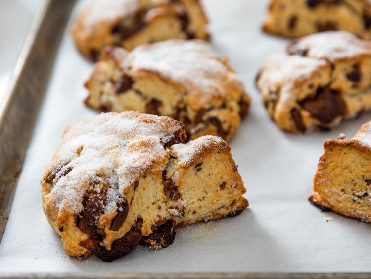

Bakery-Style Cream Scones With Milk Chocolate Recipe
Recipe from Serious Eats. This is actually my favorite scone recipe.

Description
Whether it is a special occasion or just another Tuesday, I don't see any reason why the day shouldn't start off with a warm chocolate scone. It's a fast and simple way to make any morning special, with or without an official excuse to do so. While it's strangely difficult to find a good scone these days (store-bought versions always seem so dry), they're freakishly simple to make at home.
Ingredients
- 9 ounces all-purpose flour (about 2 cups, spooned; 255g), plus more for dusting
- 1 tablespoon baking powder
- 2 teaspoons sugar
- 1 teaspoon (4g) Diamond Crystal kosher salt; for table salt, use half as much by volume or use the same weight
- 2 ounces cold unsalted butter (4 tablespoons; 55g), cut into 1/2-inch cubes
- 6 ounces roughly chopped milk chocolate (1 cup; 170g)
- 2 ounces milk (1/4 cup; 55g), any percentage will do
- 6 ounces heavy cream (3/4 cup; 170g)
- Toasted or turbinado sugar
Steps
- Adjust oven rack to lower-middle position and preheat to 400°F (200°C).
- Sift flour into a medium bowl, then whisk in baking powder, sugar, and salt.
- Add butter and toss to break up the pieces, then smash each one flat between your fingertips. Continue smashing and rubbing until butter disappears into a coarse meal.
- Add milk chocolate and toss to combine, then stir in milk and cream to form a soft dough.
- Turn onto a lightly floured surface and pat into a 7-inch round. Cut into 6 wedges with a chef’s knife, sprinkle generously with toasted or turbinado sugar, and arrange on a parchment-lined half sheet pan.
- Bake until puffed and golden, about 25 minutes. If you like, serve with clotted cream and strawberry jam, or a spoonful of super-thick and fruity whipped cream.